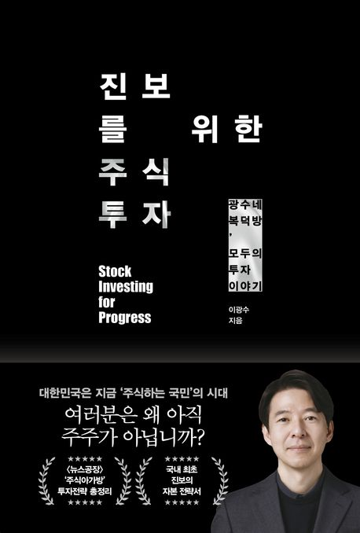
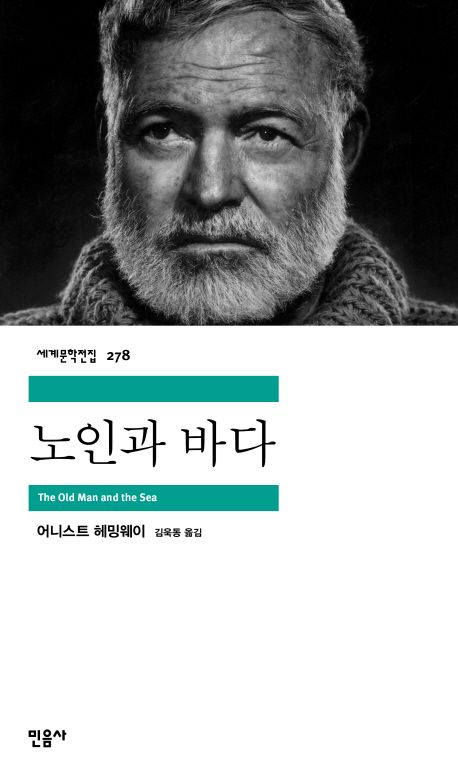
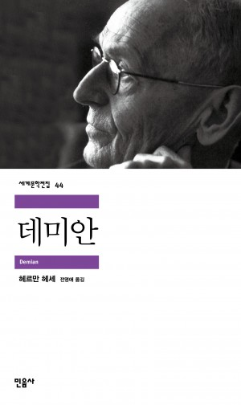

깊은 밤, 당신의 영혼을 깨우는 문장들을 수집합니다
이곳은 세상의 소음에서 벗어나 오직 텍스트와 당신만이 대화하는 침묵의 공간입니다. 우리는 유행하는 지식이 아닌, 시간을 견뎌낸 클래식과 사유의 깊이를 더해주는 현대의 문장들을 큐레이션합니다.
어두운 조명 아래, 당신의 인생을 비출 등불 같은 한 권의 책을 찾아보세요.

투자를 주권 행위로 재정의한 이광수 작가의 투자 철학. ’왜 진보는 가난해야 하는가’라는 화두를 통해 경제적 민주주의와 진보적 투자의 길을 탐구합니다.

결과가 아닌 과정에서 증명되는 인간의 존엄성. 헤밍웨이 특유의 절제된 문체 속에 담긴 노인 산티아고의 불굴의 정신을 탐구합니다.
니체의 정신 3단계(낙타, 사자, 어린아이)를 통해 본 그리스인 조르바의 철학적 분석. 진정한 자유와 위버멘쉬의 삶을 탐구합니다.

나답게 살고 싶은 당신을 위한 가장 완벽한 고전. 헤르만 헤세의 ‘데미안’ 속에 담긴 알을 깨는 용기와 진정한 자아를 향한 치열한 여정을 깊이 있게 탐구합니다.